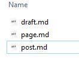
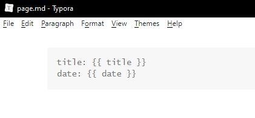
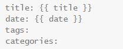
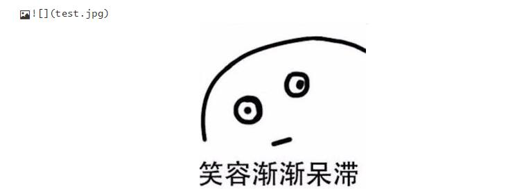

搭建个人网站（4）：Typora搭配Hexo写文章
模板
上一篇 搭建个人网站（3）：Hexo搭建网站 里提到，Hexo 会使用 scaffolds 文件夹里的markdown作为模板来生成新的文件，我们也可以通过修改它们来自定义自己的模板。
scaffolds 文件夹里一般会有下面三个默认的模板，分别对应draft, page 和 post 三种文章类型：

打开之后就可以看到这些文件的内容只有一个YAML格式的文件头：

在使用 Hexo 新建文章的时候就会根据文章类型自动套用这些模板，只要修改相应的.md就可以让之后生成的文章使用我们自定义的模板啦。
举个最简单的例子，如果希望之后生成的 post 都有 categories 属性，那只用将 categories 加入到 post.md 中即可：

Typora
Typora是一款很简洁好看的Markdown编辑器，官网：https://www.typora.io/ 。
但在使用Typora搭配Hexo写博客的时候，如果不进行一些设置的话，会导致编译后本地图片无法显示等问题，查看图片链接地址的话会发现是图片的路径不对导致的。
解决办法
网上的大部分解决办法（比如下载插件之类的）都过时了，对于新版的Hexo，解决办法非常简单：
Step 1. 将__config.yml 中的 post_asset_folder 设置为 true，这样每次创建文章的时候会生成同名的文件夹，可以将图片等资源文件放进去。
Step 2. 使用 Typora 的时候设置 Format — Image — Use Image Root Path，讲 root path 设置为第一步中创建的文件夹。
Step 3. 直接用markdown的语法插入图片即可，注意这时不需要写相对目录，也不要写 ‘/‘，只写文件名即可，如下图：

本博客所有文章除特别声明外，均采用 CC BY-SA 4.0 协议 ，转载请注明出处！